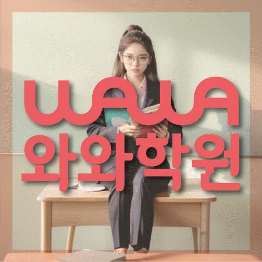

HIGH SCHOOL ENGLISH
송탄 고등 영어학원
송탄 고등 영어학원 선택 전 내 속도에 맞춘 학습 점검, 장문 독해·시간 배분·근거 독해 진단, 내신·모의고사 학습 구분과 센터 확인 정보를 살펴보세요.
01 Quick answer
송탄 고등 영어: 내 속도에 맞춘 학습 점검
송탄 고등 영어에서 ‘내 속도에 맞춘 학습 점검’을 살필 때는 광고 문구보다 학생이 남긴 흔적을 먼저 봅니다. 진단 자료: 최근 시험지에 문항별 읽기·판단·검토 시간을 적고 어느 구간에서 시간이 길어지는지 확인하세요. 이번 주 행동: 짧은 세트에서 세 시간을 따로 기록한 뒤 정확도를 해치지 않는 범위에서 병목 구간만 다시 연습하세요. 재확인 기준: 다음 세트에서는 정답 수와 함께 지문별 소요 시간과 마지막 검토 시간을 같은 표에서 비교하세요. 마지막에는 장문 독해·시간 배분의 변화와 근거 독해의 남은 질문을 다른 칸에 적으세요.
확인 기준
송탄 학생의 한 가지 병목과 장문 독해·시간 배분의 첫 행동, 근거 독해의 재확인 날짜가 분명해야 계획을 비교할 수 있습니다.


 010-6839-8283
010-6839-8283학습 답변 요약
핵심 주제는 ‘내 속도에 맞춘 학습 점검’입니다. 장문 독해·시간 배분·근거 독해의 현재선을 확인하고 문장 구조·문맥 어휘의 실행 기록과 학교·센터 사실을 분리해 살펴봅니다.
송탄 고등 영어 첫 진단: 내 속도에 맞춘 학습 점검
송탄 고등 영어의 핵심 질문은 ‘내 속도에 맞춘 학습 점검’입니다. 최근 점수보다 먼저 ‘정확도 문제와 읽는 속도 문제를 구분하고 어느 문항에서 시간이 길어지는지’를 시험지의 실제 표시와 대조하세요.
다음으로 ‘해석한 문장을 글의 주장과 연결하고 선택지 판단 근거를 찾는지’를 따로 확인하고 두 답이 모두 흔들리면 장문 독해·시간 배분과 근거 독해를 한 과제로 묶지 말고 먼저 설명할 영역을 고르세요.
장문 독해·시간 배분·근거 독해 기록이 보여 주는 영어 학습의 현재선
최근 시험지와 교재에서 ‘문항별 소요 시간, 다시 읽은 문장과 끝까지 풀지 못한 구간’을 먼저 찾고 ‘문단별 핵심 문장, 연결어 표시와 선택지를 지운 이유’를 다른 색으로 표시해 정답보다 판단이 바뀐 위치를 기록하세요.
각 표시 옆에는 ‘정확도를 유지한 채 같은 유형의 소요 시간이 줄었는지’ 또는 ‘새 지문에서도 정답과 오답 선택지의 근거를 각각 짚는지’ 중 해당 질문을 붙이고 재확인 날짜를 적습니다. 이 기록으로 장문 독해·시간 배분과 근거 독해에 필요한 피드백을 구체화합니다.
학교 시험과 모의고사의 장문 독해·시간 배분·근거 독해 계획
학교 시험과 모의고사는 같은 문제 수로 계획하지 않습니다. 각각의 자료에서 ‘내신의 꼼꼼한 본문 확인과 모의고사의 제한 시간 판단을 따로 연습하는 기준’과 ‘내신 본문 암기와 모의고사 처음 보는 지문 독해를 구분하는 기준’이 필요한 지점을 찾아 완료 기준을 나누세요.
내신 마감일과 모의고사 재확인일을 달력에 따로 표시하고 두 일정마다 장문 독해·시간 배분과 근거 독해의 최소 분량을 적으세요. 한쪽이 밀리면 다음 주 비중을 조정합니다.
시험 일정 옆에는 ‘내 속도에 맞춘 학습 점검’의 장문 독해·시간 배분 점검 날짜와 근거 독해 재확인 날짜를 구분해 남기세요. 시험이 끝난 뒤에는 장문 독해·시간 배분·근거 독해 기록 가운데 학생이 근거를 설명하지 못한 영역만 다음 주 계획에 남깁니다.
송탄 센터 정보와 장문 독해·시간 배분·근거 독해 질문을 구분하는 법
페이지에서 확인되는 참고 학교는 이충고·은혜고·효명고 등이며, 학생의 실제 학교와 시험 범위를 알려 자료 반영 가능 여부를 대조해야 합니다.
영어 가능 학년 항목에서 고1·고2 표기를 확인할 수 있어 문장 구조·문맥 어휘 관련 반 구성과 현재 시간표는 별도 확인 항목입니다. 센터 정보는 와와학습코칭센터 이충점과 경기 평택시 이충로 49-31 삼원프라자 201호를 기준으로 확인합니다. 와와학습코칭센터 이충점 상담 메모를 정리할 때는 교습비와 시간표를 상담 시점에 다시 확인하고 제공 주소에서의 이동 시간을 계산합니다.
첫 기록과 재풀이를 연결하는 장문 독해·시간 배분 7일 계획
첫 주에는 ‘문항별 소요 시간, 다시 읽은 문장과 끝까지 풀지 못한 구간’에서 한 가지 병목만 고릅니다. 실행 항목은 ‘짧은 세트에서 읽기·판단·검토 시간을 따로 기록하고 병목 구간만 재연습하기’이며 새 교재나 추가 문제는 재확인 뒤에 결정하세요.
7일째에는 ‘정확도를 유지한 채 같은 유형의 소요 시간이 줄었는지’를 첫 기록과 대조합니다. 변화가 없으면 문제 수를 늘리지 말고 ‘짧은 세트에서 읽기·판단·검토 시간을 따로 기록하고 병목 구간만 재연습하기’의 순서를 단순화한 뒤 다시 확인합니다.
상담에서 장문 독해·시간 배분·근거 독해를 묻고 이용 조건을 확인하는 순서
시험지에서 막힌 위치를 표시해 상담에 가져갑니다. ‘빠르게 풀기 전에 정확도와 소요 시간을 어떤 순서로 확인하는지’를 먼저 묻고 ‘정답 수가 아니라 근거 문장을 찾는 과정을 어떻게 기록하는지’를 다음 질문으로 둡니다.
마지막에는 장문 독해·시간 배분을 누가 언제 확인하는지, 근거 독해를 어떤 자료로 다시 볼지 적습니다. 시간표·교습비·통학은 별도 조건입니다.
- 학생 자료최근 시험지와 장문 독해·시간 배분 표시 위치
- 시험 계획학교 범위표와 근거 독해 마감일
- 재확인문장 구조 확인 날짜와 학생 설명 기록
- 이용 조건영어 가능 학년(고1·고2)·시간표·교습비·통학 동선
02 Parent perspective
송탄 고등 영어 학부모 상담 상황
아래 송탄 고등 영어 상담 장면은 실제 이용 후기나 특정 학생의 성과가 아닌 준비용 가상 예시입니다. 학습 결과는 학생의 출발점과 실천 정도에 따라 달라질 수 있습니다.
시험 뒤 공부 순서를 정하지 못한 송탄 학생을 가정했습니다. 학부모는 ‘내 속도에 맞춘 학습 점검’을 중심으로 장문 독해·시간 배분에서 막힌 이유와 근거 독해의 다음 확인일을 나누어 적습니다.
송탄 학부모가 센터 답변을 학생 계획으로 옮기는 가상 상황입니다. 영어 가능 학년(고1·고2)과 실제 시간표를 확인하고 문장 구조의 첫 행동과 문맥 어휘의 확인일을 정합니다.
03 FAQ
송탄 고등 영어 자주 묻는 질문
학생 자료, 가능 학년과 실제 이용 조건을 나누어 답했습니다.
송탄 고등 영어에서 ‘내 속도에 맞춘 학습 점검’은 어떤 자료부터 확인하나요?
점수표보다 ‘문항별 소요 시간, 다시 읽은 문장과 끝까지 풀지 못한 구간’이 남은 시험지를 먼저 봅니다. ‘짧은 세트에서 읽기·판단·검토 시간을 따로 기록하고 병목 구간만 재연습하기’를 해 본 뒤 ‘정확도를 유지한 채 같은 유형의 소요 시간이 줄었는지’에 학생이 혼자 답할 수 있는지를 같은 자료로 다시 확인하세요.
장문 독해·시간 배분·근거 독해 진단 기록은 어떻게 나누나요?
장문 독해·시간 배분과 근거 독해는 시험지의 표시와 재풀이 결과를 각각 이어서 봅니다. 정답 수만 한 칸에 모으지 마세요.
내신과 모의고사에서 장문 독해·시간 배분·근거 독해 비중은 어떻게 나누나요?
학교 범위 학습과 누적 학습의 달력을 분리한 뒤 두 일정에서 장문 독해·시간 배분과 근거 독해의 최소 행동을 따로 정하세요. 기준은 ‘내신의 꼼꼼한 본문 확인과 모의고사의 제한 시간 판단을 따로 연습하는 기준’과 ‘내신 본문 암기와 모의고사 처음 보는 지문 독해를 구분하는 기준’입니다.
상담 전 문장 구조·문맥 어휘를 확인하려면 어떤 자료를 가져가나요?
문장 구조·문맥 어휘를 확인할 수 있는 최근 자료와 학교 범위표, 현재 교재를 준비합니다. ‘암기량이 아니라 지문 안에서 다시 알아보는 비율을 어떻게 확인하는지’를 묻고 두 영역의 재확인 날짜를 적으세요.
송탄 고등 영어 상담에서 가능 학년과 참고 학교는 어떻게 확인하나요?
송탄 고등 영어학원 페이지의 제공 센터 사실을 기준으로 답합니다. 송탄 상담 페이지의 주소 자료에 기재된 위치는 경기 평택시 이충로 49-31 삼원프라자 201호입니다. 제공 자료의 과목별 학년 정보는 영어 고1·고2입니다. 비용 자료는 센터별 교습비 확인 버튼으로 연결됩니다. 운영 조건은 시점에 따라 달라질 수 있으므로 과목·학년·시간표를 등록 전에 한 번 더 확인하세요.
04 Related
송탄 관련 학원·상담 페이지
같은 지역의 과목 조합과 학년 카테고리, 앞뒤 지역 안내를 함께 확인하세요.